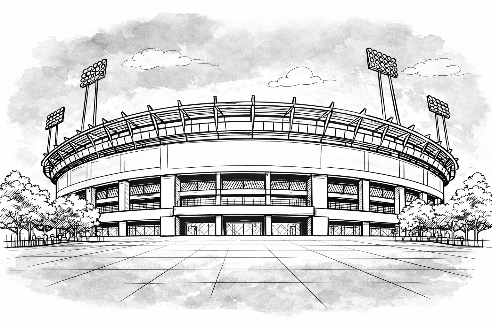

BBC Sport
BBC Sport
 Fanatik
Fanatik
 Reuters
Reuters
 The Athletic
The Athletic
Prominent footballers have become increasingly vocal about the physical toll of a relentless fixture schedule. But are they right — and if injuries are rising, is congestion truly to blame?
Over the last few years, prominent figures within football have become increasingly vocal in their complaints over the fixture schedule becoming more congested — and its effect on players' fitness and long-term health.
BBC Sport
Fanatik
Reuters
The Athletic
But are these claims valid?
Are players getting injured more often? Is the severity of injuries getting worse? And if so — is fixture congestion really the cause?

This stadium will represent the scale of injury absences across Europe's top five leagues — measured not just in matches missed, but in days lost.
Premier League · Bundesliga · La Liga · Serie A · Ligue 1
Our stadium is divided into four stands — one for each type of soft-tissue injury. Each seat represents 50 injury days.
For now, the stands are empty.
From top to bottom: Muscle, Joint & Cartilage, Ligament, and Tendon injuries.
Together they account for 84% of all absences.
Muscle strains and tears dominate — the single largest category by a wide margin. Each seat represents 50 injury days.
Knee and ankle problems add another 75 seats — heavily linked to high-intensity sprinting loads.
Ligament sprains and ACL ruptures add 54 seats — these are the long-duration injuries that define a player's season.
Add tendon injuries and the picture is complete — the highest figure in five seasons, with each seat representing 50 days lost.
So injuries are rising. But is the fixture schedule really more congested?
The number of matches played across the top five leagues isn't actually increasing. The schedule, by raw count, hasn't grown.
These figures include all domestic league, cup and European competitions
Premier League clubs also aren't seeing a meaningful rise in fixture congestion.
These figures include matches played in the Premier League, FA Cup, League Cup and European Competitions.
If it's not more matches — or more congestion — then why are injuries rising?
The answer may lie in how the game itself has changed.
Matches have become far more physically demanding in recent years.
Recent tactical shifts mean players cover more ground at higher speeds, and regulatory changes have extended how long games actually last.
The number of matches hasn't changed. But what happens inside those matches has shifted dramatically.
Modern pressing systems and high defensive lines have made the game significantly more physically taxing — even over the same 90 minutes.
Players are covering significantly more ground at sprint speed in every match. High-press tactics mean even defenders and midfielders must repeatedly hit top speed.
It's not just distance — it's the number of explosive efforts. Each sprint is a muscular stress event, and players are performing half as many again each week compared to a decade ago.
High-speed running places a significant load on hamstrings and hip flexors, the muscles most prone to strain under fatigue.
Combining sprints and high-speed running, the total high-intensity load per player has risen by more than a quarter. Recovery windows between matches haven't lengthened to match.
New stoppage-time rules introduced by IFAB mean matches are lasting around five minutes longer each.
Injury data sourced from the CIES Football Observatory and Transfermarkt, covering five seasons (2020/21–2024/25) across the Premier League, Bundesliga, La Liga, Serie A, and Ligue 1.
Injury absence figures were compiled from Transfermarkt's publicly available injury history data, cross-referenced with match-by-match squad sheets for all clubs in the top five European leagues.
Soft-tissue injury categorisation follows the UEFA injury study taxonomy: muscle injuries (strains and tears), joint & cartilage injuries (including knee and ankle problems), ligament injuries (sprains and ruptures), and tendon injuries (tendinopathies and ruptures).
Fixture congestion was computed from each club's official published schedule. A "congested" period is defined as three or more matches within a seven-day window.
Match intensity data (distance covered, sprints, high-intensity runs) was sourced from publicly available Opta and StatsBomb aggregates published by the leagues.
Travel distance estimates use great-circle calculations between stadium coordinates, aggregated at season level per squad.
Dot scale: each seat in the stadium visualisation represents 10 injury days. Dot counts are rounded to the nearest 10 for visual clarity; total displayed may differ slightly from exact figures quoted in text.